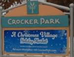

1979 West 25th Street
Cleveland, Ohio 44113
Phone:216-664-3387
West Side Market
The West Side Market is the oldest publicly owned market in Cleveland. It was established in 1840 as an open air market. Josiah Barber and Richard Lord donated land for the market. In 1912 the markethouse which was designed by architects Benjamin Hubbel and W. Dominick Benes was opened. The markethouse features a 137 foot clock tower that stands tall at the markets 25th Street entrance. The market currently has over 100 vendors ranging from baked goods, meats, dairy, coffee, herbs, candy and more. Aurora Farms Premium Outlets
549 South Chillicothe Road
Aurora, Ohio 44202
Phone:330-562-2000
Aurora Farms Premium Outlets
Aurora Farms Premium Outlet offers over 70 premium outlet stores. Entertainment events are offered throughout the year. It was opened in the early 1970's and operated by Chelsea Premium Outlets. Aurora farms offers a family friendly shopping experience. Stores include: Coach, Saks Fifth Avenue off 5th, Ann Taylor Factory Store, Eddie Bauer Outlet, Le Gourmet Chef. See website for complete listings. Lodi Outlet Mall
9911 Avon Lake Road
Burbank, Ohio 44214
Phone:330-948-9929
Lodi Station Outlets
Losi Outlet Mall offers more than 60 outlet stores and features vintage inspired trains. The family friendly environment also offers a play area for the kids as well as multiple dining venues. The 311,478 square foot space includes nationally known retailers including: Polo Ralph Lauren Factory Store, Eddie Bauer Outlet, Carters, Gap Outlet, Lane Bryant Outle, Levi's Outlet Store. Train rides are a highlight for visitors featuring unique one of the kind engines. The two featured trains originally from England pay homage to the craftmanship of days gone by. See website for complete store listing and train hours. Legacy Village
25001 Cedar Road
Lyndhurst, Ohio 44124
Phone:216-382-3871
Legacy Village
Legacy Village near Beachwood, Ohio is an upscale shopping, dining experience. The mall was established in 2003. Legacy offers a combinations of shopping, dining and entertainment. Legacy was developed by First Interstate Properties and features over 55 restaurants and upscale shops. Inviting entertainment programs are offered throughout the year.  Crocker Park
189 Crocker Park Boulevard
Westlake, Ohio 44145
Phone:440-871-6880
Crocker Park
Crocker Park creates a shopping experience that blends office, restauraunt and residental spaces together. The neighborhood feel is a very inviting with easy outdoor access to a blend of established retailers and restaurants. Crocker Park offers various events throughout the year.